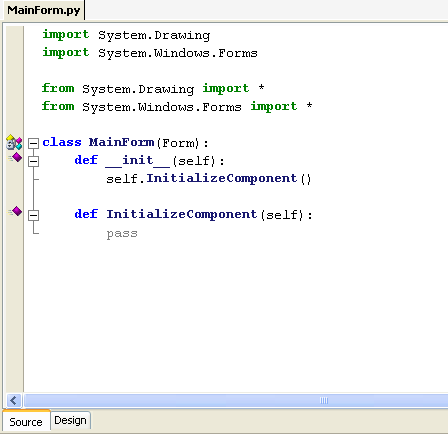

Support for designing Windows Forms in IronPython is now available in SharpDevelop 3.1. The original IronPython forms designer was removed when SharpDevelop 3.0 began supporting IronPython 2.0 which had removed support for generating IronPython code from Microsoft's CodeDOM. The forms designer has now been re-implemented to use the IronPython abstract syntax tree (AST) and no longer relies on the CodeDOM.
To create a Windows Application open up the new project dialog by selecting New then Solution from the File menu. Select the Python category to show the available project templates. Select the Windows Application project template, enter a name and location and click the Create button.
The Windows Forms designer is not yet complete so be warned that it could generate form code that will no longer compile.
The designer can be opened by opening a form in the text editor and selecting the Design tab at the bottom of the editor.

Once open in the designer you can add controls to the form by dragging the controls from the Tools window. In the screenshot below a label, text box and a button have been added.
Click the Source tab at the bottom of the editor to view the generated code in the InitializeComponents method.
The IronPython forms designer is not yet complete and the following are some of the known limitations.
For those interested in how the forms designer actually works at a high level we will now look at what the IronPython forms designer does when loading and then generating code for a form.
To show the form in the designer the following steps are executed.
To generate the code after the form has been designed the following steps are executed.